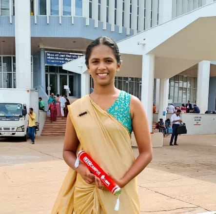
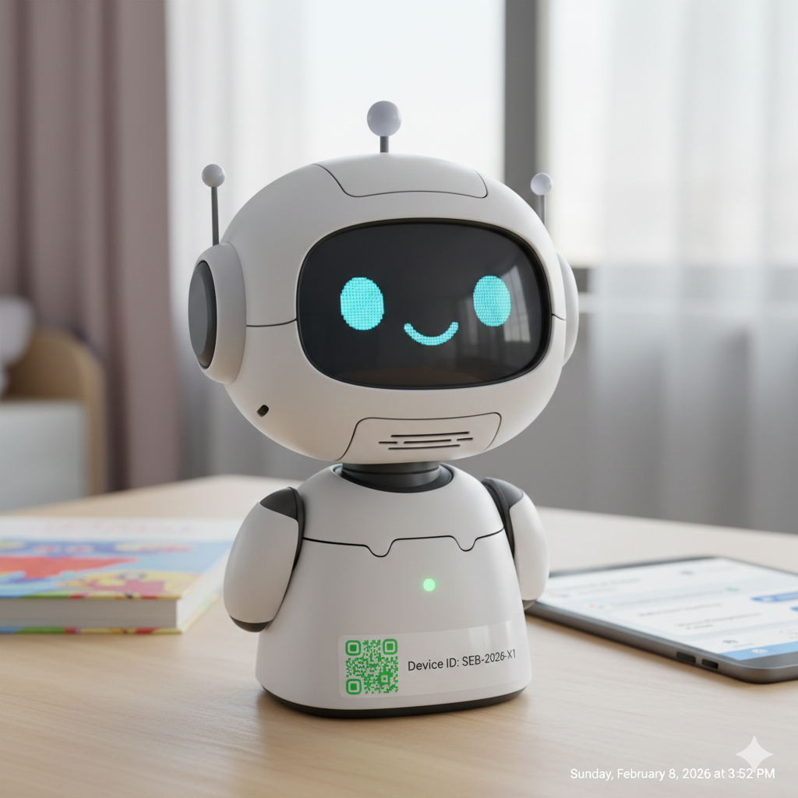
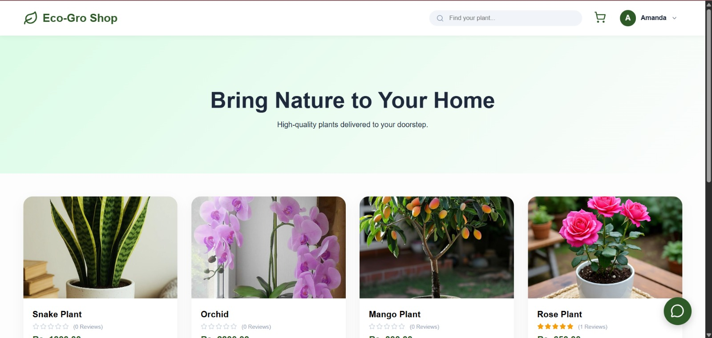
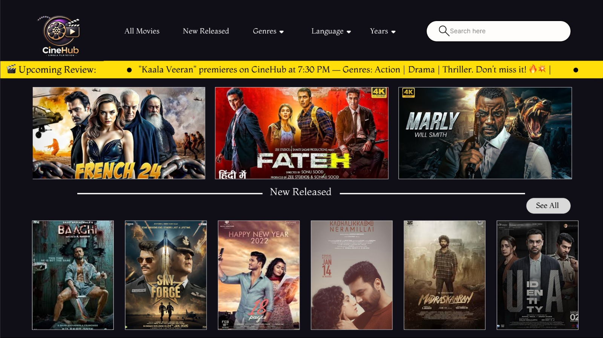
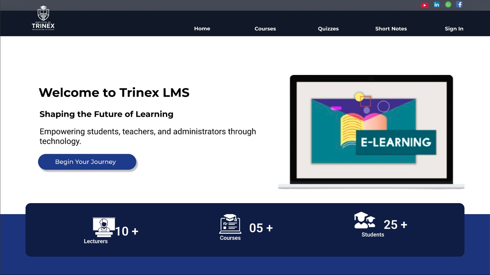
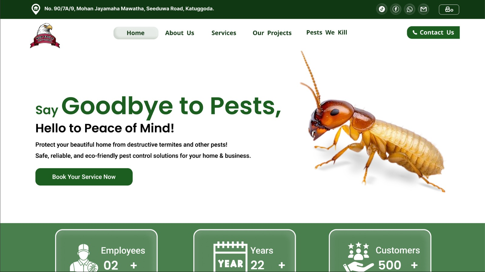

I bridge the gap between business needs and technical execution. With a strong foundation in requirement elicitation, UI/UX design, and software engineering, I translate complex challenges into impactful, user-centric digital solutions.

Currently completing my final year, specializing in system architecture, business logic, UI/UX design, and creating interactive software solutions.
Enhanced professional communication skills, enabling effective collaboration with global stakeholders, clear technical documentation, and professional requirement elicitation.
Acted as the primary liaison for corporate clients, managing project requirements, documenting business needs, and developing high-fidelity prototypes.
Studied Logic, Political Science, and Sinhala. This foundation strengthened my analytical problem-solving and deep understanding of human behavior—essential for empathetic requirements gathering.

Spearheaded research and requirement gathering from parents and educators to design an interactive hardware and software solution aimed at reducing screen addiction.

Architected an end-to-end plant-selling platform. Translated business requirements into robust backend logic and designed a seamless user journey from discovery to checkout.

Designed a user-centric Figma prototype for a localized Sinhala movie review platform. Conducted user research to create an engaging dark-themed UI with intuitive movie discovery features.

Designed a clean, intuitive user interface for an educational institute's Learning Management System. Currently translating the UI/UX design into a fully functional web application.

Designed a clean, conversion-focused user interface for a real-world local pest control business. Emphasized clear calls-to-action and a professional layout to build customer trust and meet actual client requirements.
I'm currently looking for UI/UX Designer & Business Analyst Intern opportunities.
WhatsApp Me